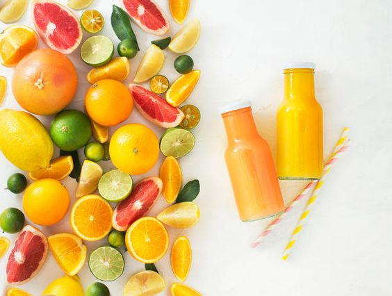
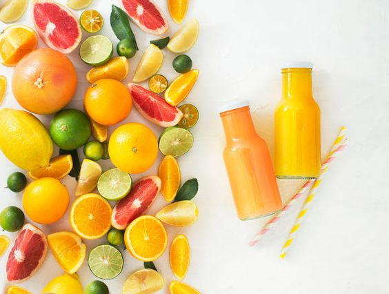
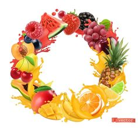
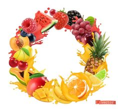
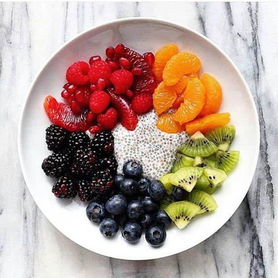
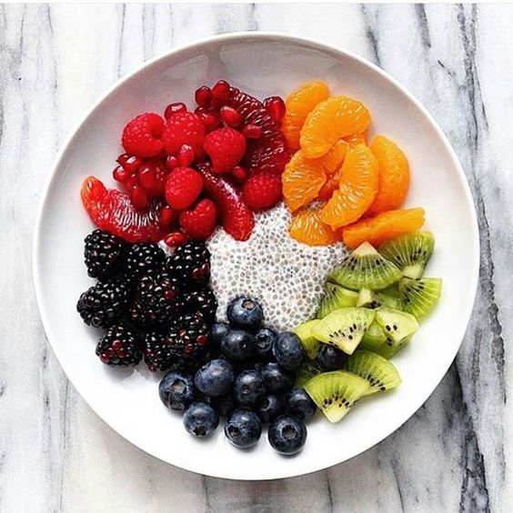

As we go about our hectic,busy days,it can be very easy to a sugary snack midway through the afternoon to keep your energy levels elevated
Accoding to Sepel,adding one or two tablespoons of apple cider vinedar to a large bottle of water
Accoding to Sepel,adding one or two tablespoons of apple cider vinedar to a large bottle of water
Accoding to Sepel,adding one or two tablespoons of apple cider vinedar to a large bottle of water
Accoding to Sepel,adding one or two tablespoons of apple cider vinedar to a large bottle of water

 

 

 

While it is important to have naturally occurring sugars in your diet, many foods contain harmful added sugars that contain no nutritional value. According toa study conducted by the University of Florida, the brain releases heroin-like chemicals called endogenous opioids when an individual indulges on sweet, salty or fatty foods.
Eating a healthy dose of protein, such as red meat, organic chicken and fish, in addition to healthy fats including avocado and coconut oil can help keep
One of the reasons why so many people end up eating unhealthy snacks is simply because they don't consider taking the time to source healthier alternatives.
One of the reasons why so many people end up eating unhealthy snacks is simply because they don't consider taking the time to source healthier alternatives.